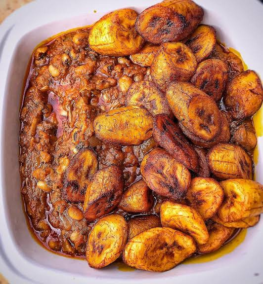

Beans and Plantain

Description
Beans and plantain is just my absolute fav. For me, as long as plantain are involved, I am in.
It is a very simple dish to make. It just takes time for the beans to cook.
Ingredients
- Beans of course
- Plantain
- Pepper
- Red Oil
- Onions
- Seasoning
- Crayfish
- Salt
Steps
- Pick your beans.
- Boil your beans.
- Grind your pepper and crayfish.
- When your beans is soft, sieve it out.
- Peel your plantain.
- Some people like their plantain fried, but I like mine boiled with the beans, so if you prefer it fried, you can fry the plantain and keep aside, but if like it boiled, add it to the beans and also add water.
- Allow to boil for 3 minutes, then add your onions and pepper.
- Allow to boil for 5 minutes, then add your seasoning and salt. Stir.
- When the beans is pasty, add the Red oil.
- Allow to boil for 5 minutes and stir.
- Put off the fire. Allow to cool.
And your sweet beans and plantain is ready to serve. Enjoy !!